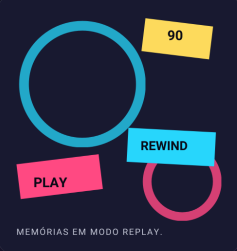

FIM DA FITA?
NUNCA.
Algumas histórias envelhecem. Outras viram memória.
Uma viagem pela TV, pelos heróis e pelas animações
que transformaram tardes comuns em grandes aventuras.

Duas produções anteriores aos anos 90 que permaneceram vivas
na memória de quem cresceu cercado por fantasia e aventura.

Tokusatsu, ação e personagens que viraram memória afetiva.


Algumas histórias envelhecem. Outras viram memória.